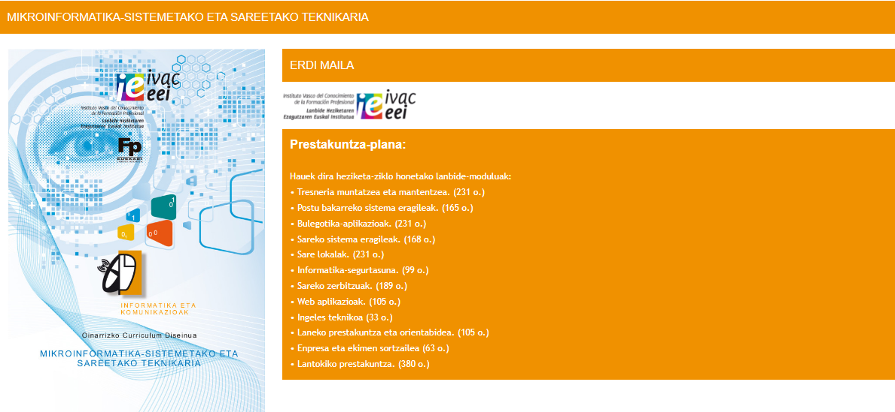

Ikasketen iraupena:
2000 ordu.
Zer ikasiko eta egingo dut?
- Sistema mikroinformatikoak, isolatuta edo sarean, instalatzea, konfiguratzea eta mantentzea, baita sare
lokalak ingurune txikietan ere.
- Oinarrizko softwarea eta aplikazio-softwarea instalatzea eta konfiguratzea, baita sare lokal kableatuak,
haririk gabekoak edo mistoak, sare publikoetara konektatuak.
- Sare lokaleko ingurune batean erabiltzaile anitzeko zerbitzuak, aplikazioak eta gailu partekatuak
instalatzea,
konfiguratzea eta mantentzea.
- Ordenagailuak eta periferikoak muntatzea eta konfiguratzea.
- Sistema mikroinformatikoak instalatzeko, konfiguratzeko eta mantentzeko eragiketekin lotzen den
logistika
zehaztea.
- Sistema mikroinformatikoetan eta sareetan disfuntzioak diagnostikatzea proba funtzioalen bidez.
- Ingurune txikietan sare lokalen kableatua eta elektronika berraztertzea eta haiek hedadura zabaleko
sareekin
konektatzea.
- Sistemako hutsegiteen eta datu-galeren aurrean datuak eta aplikazioak berreskuratzeko ezarritako
prozedurak
gauzatzea.
- Sistemaren dokumentazio teknikoa eta administrazio-dokumentazioa lantzea, aurrekontuak prestatzea eta
bezeroari aholkuak ematea.